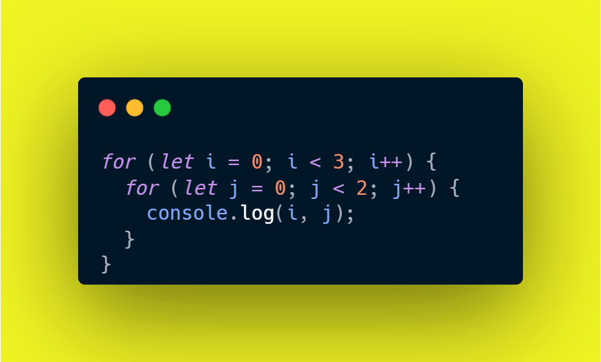
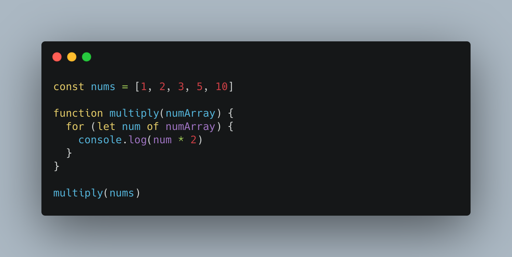
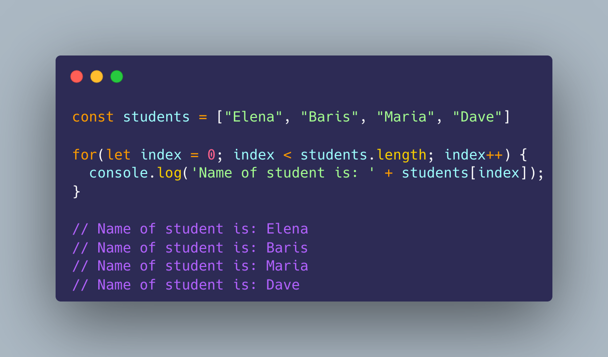
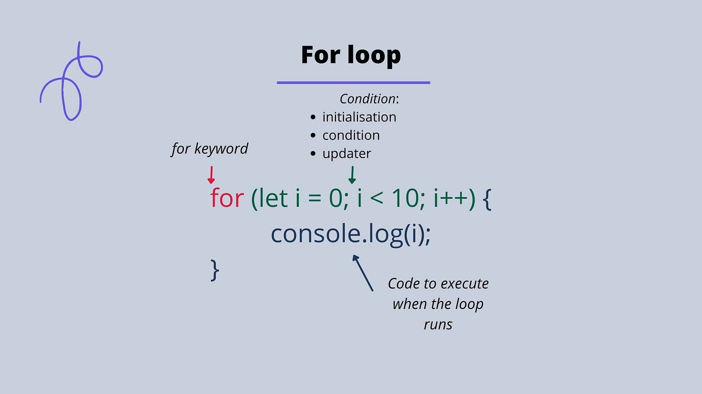
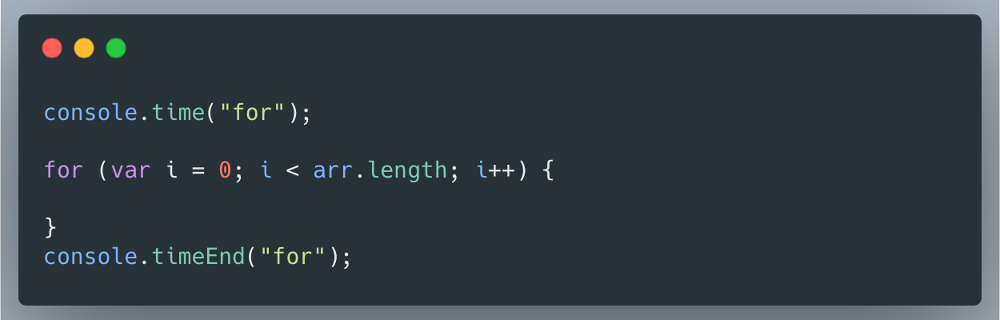

Day 21: List (Array) တွေကို လှည့်ပတ်ဖို့ နောက်ထပ်နည်းလမ်း - for...of Loop
မင်္ဂလာပါ! 👋 မနေ့က List (Array) ထဲက အချက်အလက်တွေကို for loop ကို သုံးပြီး တစ်ခုချင်းစီ လှည့်ပတ်ကြည့်နည်းကို လေ့လာခဲ့ကြတယ်နော်။ `for` loop က Index တွေကို သုံးပြီး လည်ပတ်တာဖြစ်ပါတယ်။ ဒီနေ့မှာတော့ Array ထဲက အချက်အလက်တွေကို ပိုပြီး ရိုးရှင်းတဲ့ နည်းလမ်းနဲ့ တစ်ခုချင်းစီ လှည့်ပတ်ကြည့်နိုင်တဲ့ နောက်ထပ် Loop အမျိုးအစားတစ်ခုအကြောင်း ပြောပြမယ်။ အဲ့ဒါကတော့ for...of loop ပါပဲ 😉။
for...of Loop ဆိုတာ ဘာလဲ?
for...of loop က Array ထဲက အချက်အလက်တွေကို သူ့ရဲ့ Index နံပါတ်ကို စိတ်ပူစရာမလိုဘဲ တန်ဖိုးတစ်ခုချင်းစီကို တိုက်ရိုက် ရယူပြီး လှည့်ပတ်နိုင်ပါတယ်။ `for` loop ထက် ပိုပြီး ဖတ်လို့ကောင်းပြီး ရေးရတာ ပိုလွယ်ပါတယ်။
Code Example:
let fruits = ["ပန်းသီး", "ငှက်ပျောသီး", "လိမ္မော်သီး", "စပျစ်သီး"];
for (let fruit of fruits) {
console.log(fruit + " ကို ကြိုက်တယ်!");
}Output:
ပန်းသီး ကို ကြိုက်တယ်!
ငှက်ပျောသီး ကို ကြိုက်တယ်!
လိမ္မော်သီး ကို ကြိုက်တယ်!
စပျစ်သီး ကို ကြိုက်တယ်!🔍 Summary:
for...ofloop က ပိုလွယ်တယ်၊ ရှင်းလင်းတယ်။- Index မသုံးချင်တဲ့အခါ အသုံးဝင်တယ်။
- Array ထဲက တန်ဖိုးတစ်ခုချင်းစီကို ပြီးစီးစွာ loop လုပ်နိုင်တယ်။




